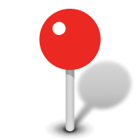
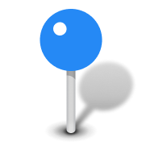
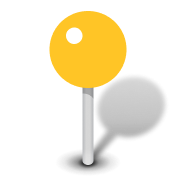
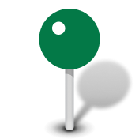
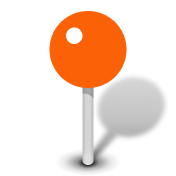
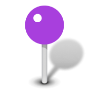
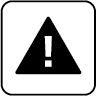

Overlay Vector Layers
Click / Drop KML or KMZ File
Preloaded: base_map.dat
Drawing Tools
Shape Inspector & Styling
Route Mode Active. Dynamic waypoint clicks will not show up as permanent map elements.
Waypoints
Name
Icon Pin

Red Pin Red Pin

Blue Pin
Yellow Pin
Green Pin
Orange Pin
Purple Pin
Alert
Fill Color
Opacity
Line Color
Line Width
Select a shape on the map to rename and style it.
Created Shapes (0)
---